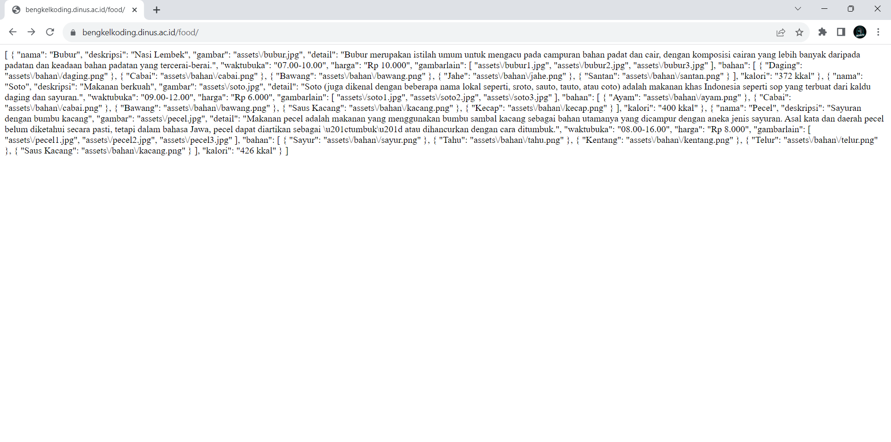
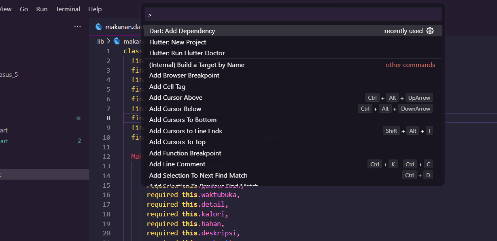
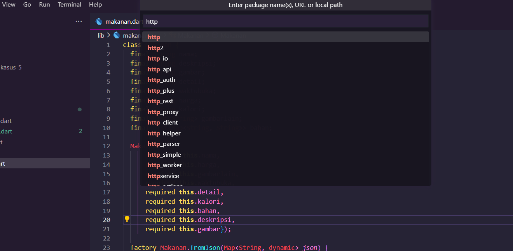
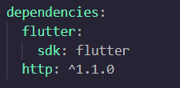

15 Studi Kasus 5
16 Studi Kasus 5 : List Kuliner menggunakan API
Pada studi kasus ini disarankan sudah membaca Bab 1 hingga Bab 7 dan sudah membuat Studi kasus 2 : List Kuliner
Pengerjaan studi kasus kali ini, kita akan melanjutkan studi kasus yang telah dibuat yaitu List Kuliner. Namun, data yang ada di dalam List Kuliner sebelumnya kita akan buat dinamis. Yaitu mengambil data menggunakan API.
Tahap-tahap pembuatannya adalah sebagai berikut :
- Siapkan API yang akan diakses. Pada studi kasus ini, kita mengambil API dari https://bengkelkoding.dinus.ac.id/food/. Jika url ini dibuka di browser, maka kita akan mendapatkan tampilan sebagai berikut :

- Bukalah file
makanan.dartdan ubah code menjadi berikut :
class Makanan {
//...
Makanan({
//...
});
factory Makanan.fromJson(Map<String, dynamic> json) {
return Makanan(
nama: json["nama"],
deskripsi: json["deskripsi"],
detail: json["detail"],
waktubuka: json["waktubuka"],
harga: json["harga"],
kalori: json["kalori"],
gambar: json["gambar"],
gambarlain: List<String>.from(json["gambarlain"]),
bahan: List<Map<String, String>>.from(json["bahan"].map(
(x) => Map.from(x).map((k, v) => MapEntry<String, String>(k, v)))),
);
}
}Terdapat sebuah method
factorydengan namaMakanan.fromJson. Metode ini digunakan untuk membuat objek Makanan dari data yang diterima dalam bentukMap<String, dynamic>. Biasanya, ini digunakan ketika ingin mengonversi dataJSONmenjadi objekDart.Dalam method
Makanan.fromJson, dataJSONyang diterima dipecah dan digunakan untuk menginisialisasi atribut-atribut objekMakanan.- Atribut
nama,deskripsi,detail,waktubuka,harga,kalori, dangambardiambil dari nilai-nilai yang sesuai dalamjson. - Atribut
gambarlaindiinisialisasi dengan list yang berisi URL gambar tambahan dari nilai yang ada dalamjson. - Atribut
bahandiinisialisasi dengan list dari map yang mewakili bahan-bahan. Data ini diambil darijsondan diubah menjadi tipe yang sesuai.
- Atribut
- Tambahkan dependency
HTTPagarAPIdapat diakses. Untuk menambahkan ke dalam dependency, kita cukup menekan shortcutctrl + shift + psecara bersamaan. Lalu, ketikkanDart:Add Dependencydan tekanenter. Setelah itu, ketikhttpdan pilih dependencyhttpdan tekanenterlagi.



Dengan ini, dependency akan langsung masuk ke dalam pubspec.yaml.
- Buat file baru dengan nama
http_helper.dartdan buat classHttpHelper. Class ini yang nantinya akan digunakan untuk melakukan permintaan HTTP ke URL dari web bengkel koding.
import 'package:http/http.dart' as http;
class HttpHelper{
String url = 'https://bengkelkoding.dinus.ac.id/food/';
Future <http.Response> getAPI() async {
final response =
await http.get(Uri.parse('https://bengkelkoding.dinus.ac.id/food/'));
return response;
}
}class HttpHelper { ... }: Ini adalah deklarasi kelas Dart bernamaHttpHelper. Kelas ini digunakan untuk mengelola permintaan HTTP.String url = 'https://bengkelkoding.dinus.ac.id/food/';: Ini adalah atribut yang menyimpan URL default yang akan digunakan untuk permintaan HTTP. URL ini mengacu padahttps://bengkelkoding.dinus.ac.id/food/.Future<http.Response> getAPI() async { ... }: Ini adalah metode yang akan mengirimkan permintaan HTTP dan mengembalikan objekhttp.Response. Beberapa hal yang perlu diperhatikan:Future<http.Response>: Ini menunjukkan bahwa metodegetAPImengembalikan objek Future yang akan berisihttp.Responsesetelah permintaan HTTP selesai. PenggunaanFuturemenunjukkan bahwa operasi ini bersifat asinkron, yang artinya tidak akan memblokir eksekusi kode lain.async: Kata kunciasyncdigunakan untuk menandakan bahwa metode ini adalah sebuah fungsi asinkron. Ini memungkinkan untuk menggunakanawaitdi dalamnya, seperti yang kita lihat pada baris berikutnya.await http.get(Uri.parse('https://bengkelkoding.dinus.ac.id/food/')): Ini adalah penggunaanawaituntuk menunggu hasil dari permintaan HTTP yang dibuat dengan menggunakan pustaka HTTP.http.getdigunakan untuk mengirimkan permintaan GET ke URL yang diberikan. Hasil dari permintaan ini adalah objekhttp.Response.return response;: Setelah permintaan HTTP selesai, objekhttp.Responsedikembalikan sebagai hasil dari metodegetAPI.
Dengan demikian, kelas HttpHelper ini dapat digunakan untuk membuat permintaan HTTP GET ke URL yang sudah ditentukan dan mengembalikan responsenya dalam bentuk objek http.Response.
- Buka file
detail_page.dartdan ubah beberapa codenya. Buatlah 2 variabel untuk menampung objek dari classmakanandan url dariAPIyang telah dibuat.
import 'package:flutter/material.dart';
import 'package:flutter_api/http_helper.dart';
import 'package:flutter_api/makanan.dart';
import 'package:flutter_api/styles.dart';
class DetailPage extends StatelessWidget {
final Makanan makanan;
HttpHelper api = HttpHelper();
DetailPage({super.key, required this.makanan, required this.api});
@override
Widget build(BuildContext context) {
//...
}
SizedBox listGambar() {
//...
}
SizedBox listRacikan() {
//...
}
Column attributes(IconData icon, String teks) {
//...
}
}
class backButton extends StatelessWidget {
//...
}
class FavouriteButton extends StatefulWidget {
//...
}
class _FavouriteButtonState extends State<FavouriteButton> {
//...
}- Model yang akan kita gunakan yaitu model dari
https://bengkelkoding.dinus.ac.id/food/. Kemudian, update semua pemanggilan model pada codingan. Seperti pemanggilan pada gambar, yang sebelumnya menggunakan Image.asset, sekarang diganti menjadi Image.network. Selanjutnya masukkan parameternya menggunakan variabel api yang sudah kita buat untuk menampung url dari API. Berikut adalah perubahan code yang dilakukan :
Stack(
children: <Widget>[
Image.asset(makanan.gambar, scale: 0.5),
const SafeArea(
child: Padding(
padding: EdgeInsets.all(12.0),
child: Row(
mainAxisAlignment: MainAxisAlignment.spaceBetween,
children: [backButton(), FavouriteButton()],
),
),
),
],
),Kita ubah codingan Image.asset menjadi Image.network:
Stack(
children: <Widget>[
Image.network(api.url + makanan.gambar, scale: 0.5),
const SafeArea(
child: Padding(
padding: EdgeInsets.all(12.0),
child: Row(
mainAxisAlignment: MainAxisAlignment.spaceBetween,
children: [backButton(), FavouriteButton()],
),
),
),
],
),Perubahan ini berlaku ke semua gambar yang akan ditampilkan ke dalam aplikasi. Update semua pemanggilan gambar yang menggunakan Image.asset menjadi Image.network.
- Setelah itu, buka file
list_item.dartdan ubah codenya menjadi berikut :
import 'package:flutter/material.dart';
import 'package:flutter_api/detail_page.dart';
import 'package:flutter_api/http_helper.dart';
import 'package:flutter_api/makanan.dart';
import 'package:flutter_api/styles.dart';
class ListItem extends StatelessWidget {
HttpHelper api = HttpHelper();
final Makanan makanan;
ListItem({super.key, required this.makanan, required this.api});
@override
Widget build(BuildContext context) {
return InkWell(
onTap: () {
Navigator.push(
context,
MaterialPageRoute(
builder: (context) => DetailPage(
makanan: makanan,
api: api,
),
),
);
},
child: Container(
margin: const EdgeInsets.symmetric(vertical: 8),
decoration: decorBoxContainer(),
height: 100,
padding: const EdgeInsets.symmetric(horizontal: 15, vertical: 10),
child: Row(
crossAxisAlignment: CrossAxisAlignment.center,
children: [
ClipRRect(
borderRadius: BorderRadius.circular(5),
child: Image.network(
api.url + makanan.gambar,
height: 75,
width: 85,
fit: BoxFit.cover,
)),
const SizedBox(width: 10),
itemText(),
Icon(Icons.food_bank_rounded, color: iconColor, size: 30)
],
),
),
);
}
BoxDecoration decorBoxContainer() {
return const BoxDecoration(
color: Colors.white,
borderRadius: BorderRadius.all(Radius.circular(10)),
boxShadow: [
BoxShadow(
color: Color.fromARGB(255, 178, 178, 178),
offset: Offset(1.0, 2.0),
blurRadius: 6.0,
),
],
);
}
Expanded itemText() {
return Expanded(
child: Column(
crossAxisAlignment: CrossAxisAlignment.start,
mainAxisAlignment: MainAxisAlignment.center,
children: [
Text(makanan.nama, style: textHeader2),
Text(
makanan.deskripsi,
overflow: TextOverflow.ellipsis,
style: const TextStyle(color: Colors.black38),
),
Text(
makanan.harga,
style: const TextStyle(
fontWeight: FontWeight.bold,
color: Colors.black45,
),
),
],
),
);
}
}
HttpHelper api = HttpHelper();: Di dalam kelasListItem, Anda membuat instance dari kelasHttpHelperyang disebutapi. Ini berarti bahwa setiap objekListItemakan memiliki akses ke instanceHttpHelperuntuk melakukan permintaan HTTP.final Makanan makanan;: Ini adalah parameter yang diterima olehListItem. Parameter ini adalah objekMakananyang akan digunakan untuk menampilkan informasi tentang makanan, termasuk gambar.Image.network(url + makanan.gambar): Ini adalah widget Flutter yang digunakan untuk menampilkan gambar makanan dari URL lengkap yang diperoleh dengan menggabungkanurldengan path gambar dari objekMakanan(yaitumakanan.gambar).Image.networkadalah widget yang digunakan untuk menampilkan gambar dari jaringan dengan URL yang diberikan.url + makanan.gambarmenghasilkan URL lengkap ke gambar makanan dengan menggabungkan URL dasar (url) dengan path gambar yang ada dalam objekMakanan.
- Lalu, buka file
home_page.dartdan ubah codenya menjadi berikut :
import 'package:flutter/material.dart';
import 'package:flutter_api/list_item.dart';
import 'package:flutter_api/makanan.dart';
import 'package:flutter_api/styles.dart';
import 'package:http/http.dart' as http;
import 'dart:convert';
import 'dart:async';
import 'package:flutter_api/http_helper.dart';
class HomePage extends StatefulWidget {
const HomePage({super.key});
@override
State<HomePage> createState() => _HomePageState();
}
class _HomePageState extends State<HomePage> {
HttpHelper api = HttpHelper();
Future<List<Makanan>> fetchmakanan() async {
final response = await api.getAPI();
if (response.statusCode == 200) {
List jsonResponse = json.decode(response.body);
print(jsonResponse);
return jsonResponse
.map((makanan) => new Makanan.fromJson(makanan))
.toList();
} else {
throw Exception();
}
}
late Future<List<Makanan>> futuremakanan;
@override
void initState() {
futuremakanan = fetchmakanan();
}
@override
Widget build(BuildContext context) {
return SafeArea(
child: FutureBuilder<List<Makanan>>(
future: futuremakanan,
builder: (context, snapshot) {
if (snapshot.hasData) {
return ListView.builder(
padding: const EdgeInsets.all(10),
itemBuilder: (context, index) {
var makanan = (snapshot.data as List<Makanan>)[index];
return ListItem(
makanan: makanan,
api: api,
);
},
itemCount: (snapshot.data as List<Makanan>).length);
} else if (snapshot.hasError) {
return Text('${snapshot.error}');
} else {
return const CircularProgressIndicator();
}
},
),
);
}
}
HttpHelper api = HttpHelper();: Ini adalah deklarasi dan inisialisasi objekapidari kelasHttpHelper.HttpHelperadalah kelas yang digunakan untuk mengelola permintaan HTTP ke suatu API. Objekapiakan digunakan untuk mengirim permintaan HTTP dalam metodefetchmakanan.Future<List<Makanan>> fetchmakanan() async { ... }: Ini adalah metode yang digunakan untuk mengambil data makanan dari API secara asinkron. Langkah-langkah yang dilakukan dalam metode ini mencakup:Menggunakan objek
apiuntuk mengirim permintaan HTTP ke API, yang diimplementasikan dalam metodegetAPI().Memeriksa status respons HTTP. Jika status adalah 200 (OK), maka data JSON dari respons HTTP diuraikan menggunakan
json.decode(). Data JSON ini kemudian diubah menjadi daftar objekMakananmenggunakan metode.map()dan.toList(). Hasilnya adalah daftarMakanan.Jika status respons HTTP bukan 200, maka metode akan melempar sebuah
Exceptionyang menandakan kesalahan.
late Future<List<Makanan>> futuremakanan;: Ini adalah deklarasi variabelfuturemakananyang akan digunakan untuk menyimpan hasil dari pemanggilanfetchmakanan. Kata kuncilatedigunakan karena variabel ini akan diinisialisasi di dalam metodeinitState.void initState() { ... }: MetodeinitStateadalah metode yang dipanggil ketika tampilan diinisialisasi. Di dalam metode ini, Anda menginisialisasifuturemakanandengan hasil dari pemanggilanfetchmakanan. Dengan demikian, pemanggilanfetchmakananakan terjadi saat halaman dimuat.Widget build(BuildContext context) { ... }: Metodebuilddigunakan untuk merender tampilan halaman utama. Ini adalah tampilan yang akan ditampilkan kepada pengguna.Anda menggunakan
SafeAreauntuk memastikan konten tampilan tetap terlihat pada area yang aman pada perangkat.Anda menggunakan
FutureBuilderuntuk mengelola pemanggilanfuturemakanan. Ini memungkinkan Anda untuk menangani tiga situasi berbeda:Jika data sudah tersedia (
snapshot.hasData), Anda membangunListView.builderyang menampilkan daftar item menggunakan widgetListItem. DataMakanandarisnapshotdigunakan untuk membangun setiap item.Jika ada kesalahan (
snapshot.hasError), Anda menampilkan pesan kesalahan dengan menggunakan widgetText.Jika data masih diambil (
snapshot.connectionState == ConnectionState.waiting), Anda menampilkan indikator kemajuan (CircularProgressIndicator) untuk memberi tahu pengguna bahwa data sedang diambil.
Dengan demikian, kelas _HomePageState ini mengelola pemanggilan permintaan HTTP ke API, pemrosesan respons, dan tampilan hasilnya dalam daftar item.
- Pastikan web BengkelKoding sedang tidak down atau error sehingga data dari API yang diambil akan tampil. Setelah itu, coba run program yang telah di update.


- Jika program sudah berhasil dijalankan, maka kita akan mendapatkan tampilan seperti gambar di atas. Jika kita klik salah satu item, maka kita akan diarahkan ke halaman detail.
Secara umum program tidak berbeda dari yang sebelumnya kita buat. Hanya saja, data yang ditampilkan diambil dari API. Jika API yang digunakan tidak dapat diakses, maka data tidak akan tampil.